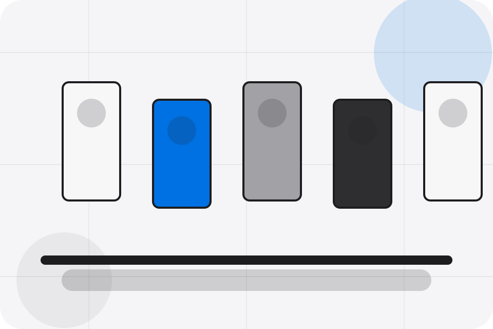
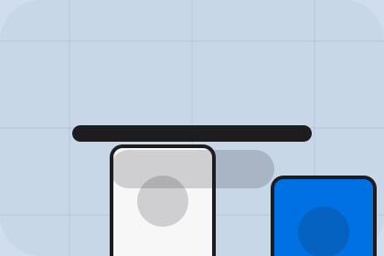

Brand / 01
Brand by Corner
Brand shaped for retail, shops & consumer sales decisions.
Brand opens as a clear retail decision hub: what Corner offers, who it helps, why it matters, and which route to take first.
The first screen combines positioning, proof, primary action, and fast internal navigation, so people can act immediately or compare the rest of the brand route with context.
Browse quicklyCompare clearlyAsk availability
Soft product shelf hero
Filter the catalogue
Select the closest route and Corner keeps the next step, proof, and follow-up expectation aligned with convenience and offer discovery.

Brand / 02
Story
Story adds commerce context to the brand route, using the minimal product store structure to support convenience and offer discovery before visitors choose a next step.
Corner uses rounded product tiles and focused copy to make the decision easier to scan, aligning the section with convenience and offer discovery rather than filling space.
Explore BrandContext
Story gives the page a specific angle instead of repeating the navigation label.
Brand / 03
Taste
Taste adds commerce context to the brand route, using the minimal product store structure to support convenience and offer discovery before visitors choose a next step.
Corner uses rounded product tiles and focused copy to make the decision easier to scan, aligning the section with convenience and offer discovery rather than filling space.
Explore BrandContext
Taste gives the page a specific angle instead of repeating the navigation label.
Judgment
The rounded product tiles show what to compare, what to avoid, and what matters most for retail, shops & consumer sales visitors.
Direction
The final cue points to a useful internal route so the section keeps the journey moving.
Brand / 04
Values
Values adds commerce context to the brand route, using the minimal product store structure to support convenience and offer discovery before visitors choose a next step.
Corner uses rounded product tiles and focused copy to make the decision easier to scan, aligning the section with convenience and offer discovery rather than filling space.
Explore Brand- 01
Context
Values gives the page a specific angle instead of repeating the navigation label.
- 02
Judgment
The rounded product tiles show what to compare, what to avoid, and what matters most for retail, shops & consumer sales visitors.
- 03
Direction
The final cue points to a useful internal route so the section keeps the journey moving.
Brand / 05
Team
Team introduces the people, roles, or specialist credibility behind Corner so the decision feels less anonymous.
The copy ties names, roles, credentials, or availability back to the decision on the page instead of treating profiles as decorative biographies.
Explore BrandCorner structures team around role, credibility, and a clear next route so visitors can compare the block quickly before they visit the shop.
Visit ShopBrand / 07
Community
Community adds commerce context to the brand route, using the minimal product store structure to support convenience and offer discovery before visitors choose a next step.
Corner uses rounded product tiles and focused copy to make the decision easier to scan, aligning the section with convenience and offer discovery rather than filling space.
Explore BrandContext
Community gives the page a specific angle instead of repeating the navigation label.
Judgment
The rounded product tiles show what to compare, what to avoid, and what matters most for retail, shops & consumer sales visitors.
Direction
The final cue points to a useful internal route so the section keeps the journey moving.
Brand / 08
Recognition
Recognition adds commerce context to the brand route, using the minimal product store structure to support convenience and offer discovery before visitors choose a next step.
Corner uses rounded product tiles and focused copy to make the decision easier to scan, aligning the section with convenience and offer discovery rather than filling space.
Explore BrandRecognition gives the page a specific angle instead of repeating the navigation label.
The rounded product tiles show what to compare, what to avoid, and what matters most for retail, shops & consumer sales visitors.
The final cue points to a useful internal route so the section keeps the journey moving.
Brand / 09
Trust
Trust gives the proof layer for brand: standards, evidence, and reassurance that make the next decision feel grounded.
Instead of relying on vague claims, Corner presents visible standards, process cues, and proof artifacts that help retail visitors judge fit.
Explore Brand- 01
Evidence
Visible proof that helps visitors believe the claims behind trust.
- 02
Standard
The quality, safety, or operating expectation this section makes explicit.
- 03
Reassurance
What becomes clearer before someone decides whether to visit the shop.
Brand / 10
Visit Shop
Corner closes the brand route with a clear action, a quick reminder of the value, and a low-friction way to visit the shop.
Visitors who are ready can use the primary action. Visitors who are still comparing can scan the section links, proof, and support routes before they visit the shop.
Visit ShopThe final block keeps the choice simple: act now, compare one more proof route, or send enough detail for a focused response.
Visit Shopconvenience and offer discovery
Visit Shop
A retail shopfront with clean product shelves, rounded offer cards, service proof, and store-finder CTAs. Brand ends with a direct path to visit the shop, plus enough context for visitors who still need to compare.

Visit ShopNotes
Information is provided for planning and should be reviewed for the final client, location, and operating rules.